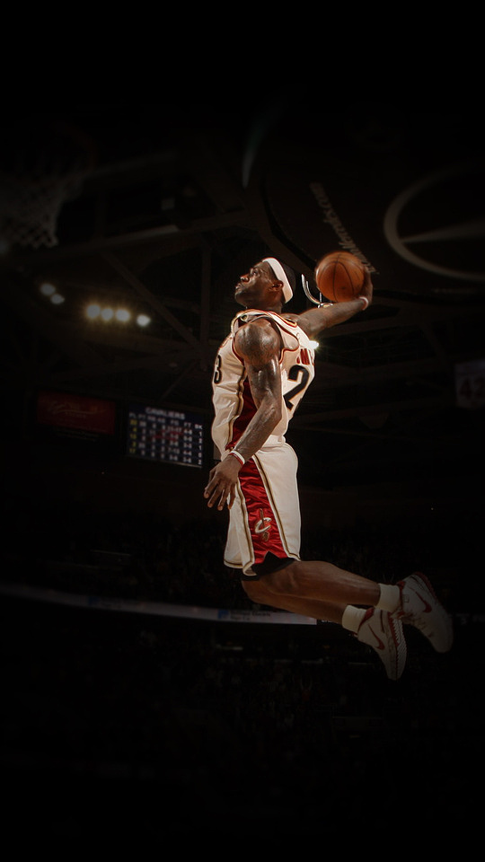

CBA重磅官宣！超级外援正式离开老东家 加盟北控投奔马布里
当今年夏天北控男篮签下梅杰里的时候，很多球迷都认为他可以帮助北控男篮去冲击前四甚至是总冠军，然而谁都没有想到，只打了两场比赛梅杰里就被马布里下狠心裁掉。 要知道这个赛季CBA球队引进外援并不容易，在这样的情况下马布里还是坚持放弃梅杰里，除了他无法帮助北控男篮之外，马布里也物色到了替代人选，除了之前媒体曝出的尤度之外，北控男篮还在联系上赛季在四川男篮效力的汉斯布鲁。12月6号，CBA官方公告四川男篮正式放弃了汉斯布鲁的优先续约权。汉斯布鲁可以说是CBA老熟人了，他分别在广州龙狮、浙江男篮以及四川男篮效力，作为硬汉内线球员，汉斯布鲁的防守以及篮板是CBA大外援中顶级的。其实上赛季汉斯布鲁就差点加盟北控男篮，当时由于汤普森表现糟糕，马布里与多名外援进行接触，但北控男篮先选择试训莫里斯，所以四川男篮抢先签下了汉斯布鲁。
加盟四川男篮之后汉斯布鲁开始爆发，他场均可以得到32.3分13.4个篮板的疯狂数据，与江苏男篮的比赛他砍下49分22个篮板，其中12个前场篮板的神奇表现。原本今年夏天四川男篮对汉斯布鲁使用了优先续约权，并且根据媒体报道四川男篮也将会签下他。但出人意料的是哈达迪重返四川男篮，据了解因为一些其他原因，汉斯布鲁希望四川男篮放弃他的优先续约权，双方为此进行了多次谈判。之前北控男篮的确与尤度进行了接触，但双方并没有达成一致，所以马布里也开始寻找其他人选，就这样，汉斯布鲁被推荐给了北控男篮，马布里认为汉斯布鲁还是可以给北控男篮带来帮助，最关键的是他已经获得了自由身。
据了解目前双方还在进行合同细节的沟通，如果一切顺利的话，汉斯布鲁将会重返CBA加盟北控男篮！
|